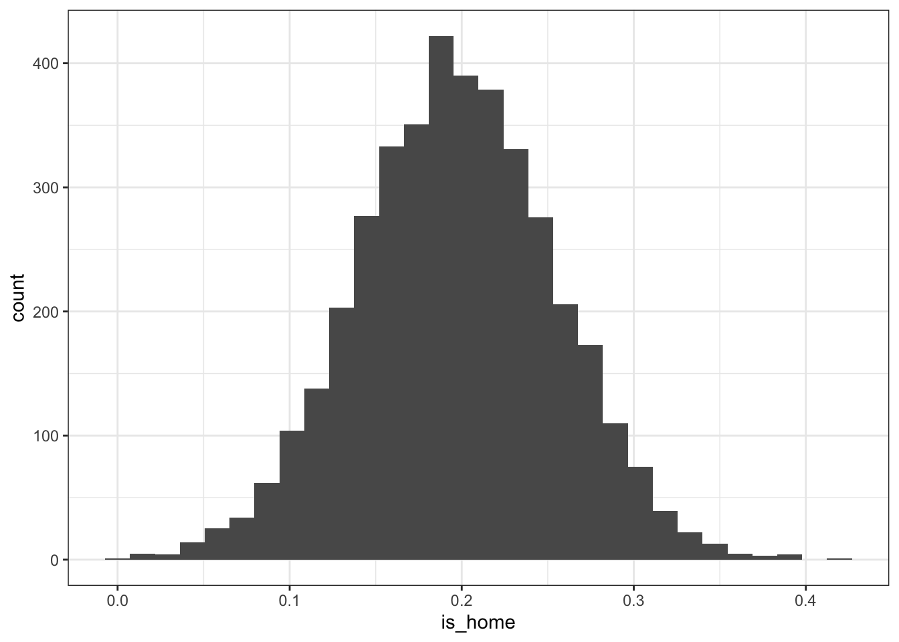
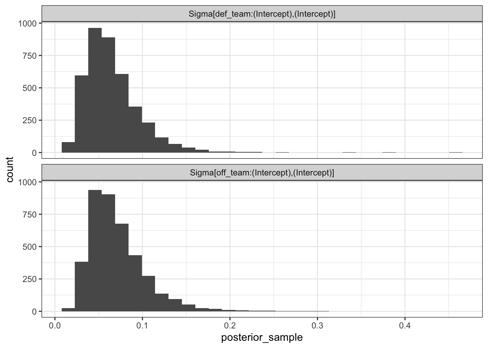
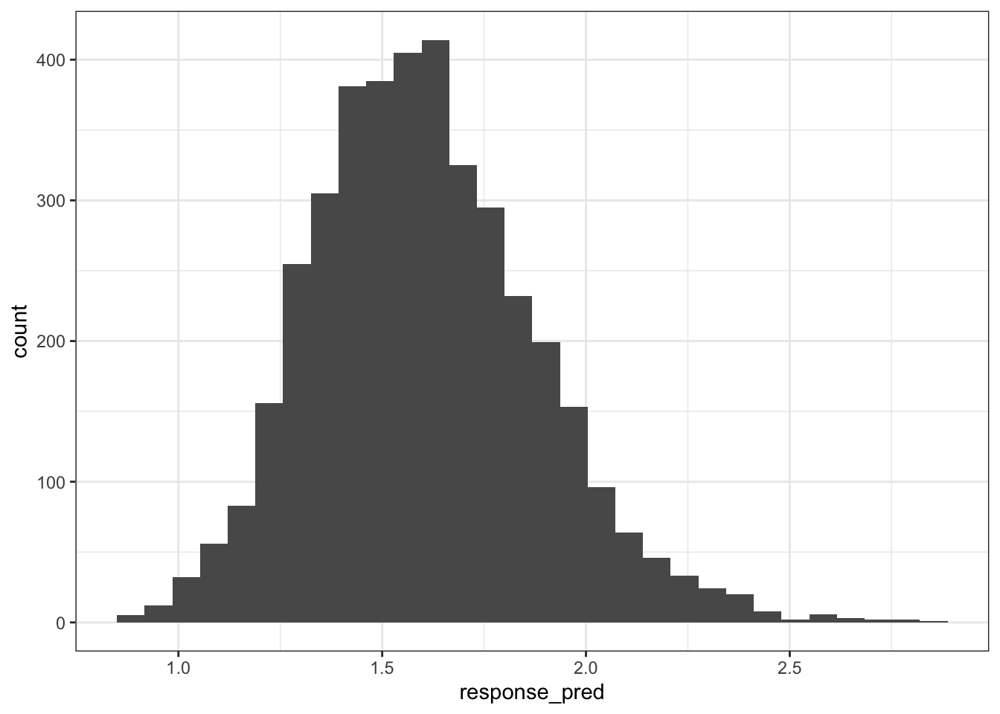
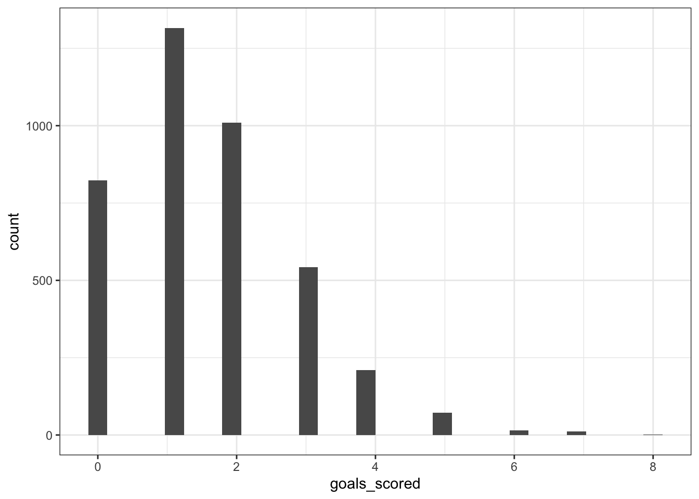

Lecture 18: Modeling team ratings and posterior predictions
Introduction
The purpose of this demo is introduce basic approaches for modeling team ratings based on the soccer match data from HW1. As a reminder, this dataset in the homeworks/hw1 folder on Canvas (soccer_match_goals.csv) and contains the goals scored across men’s soccer matches in the five biggest European leagues during the 2023-2024 season. This dataset contains the following columns:
goals: number of goals scored by team in a match
xG: accumulated number of expected goals by team in a match
off_team: the team name affiliated with the offense scoring the number of goals and total xG
def_team: the team name affiliated with the defense allowing the number of goals and total xG
league: string denoting the country: ENG (Premier League), ESP (La Liga), FRA (Ligue 1), GER (Fußball-Bundesliga), and ITA (Serie A)
match_id: unique identifier for each match, such that each match has two rows in the dataset, one for the home team and one for the away team
is_home: binary indicator denoting whether or not the team was the home team in the match.
Note that each row in this dataset corresponds to information about a team’s offensive performance for a single match. This means a team is repeatedly observed for each match they played during the 2023-2024 season. I constructed this dataset using the worldfootballR package, and the script init_soccer_match_goals.R on Canvas is the code I used to make the dataset.
The code chunk below loads in the data, and then for ease we’ll only consider matches in the Premier League (i.e., league == ENG).
library(tidyverse)match_goals_scored <-read_csv(here::here("data/soccer_match_goals.csv"))# Create the ENG only table:eng_match_goals_scored <- match_goals_scored |>filter(league =="ENG")eng_match_goals_scored
# A tibble: 760 × 7
goals xG off_team def_team league match_id is_home
<dbl> <dbl> <chr> <chr> <chr> <dbl> <dbl>
1 0 0.3 Burnley Manchester City ENG 1 1
2 2 0.8 Arsenal Nott'ham Forest ENG 2 1
3 0 2.7 Everton Fulham ENG 3 1
4 0 0.5 Sheffield Utd Crystal Palace ENG 4 1
5 4 4 Brighton Luton Town ENG 5 1
6 1 1.3 Bournemouth West Ham ENG 6 1
7 5 3.3 Newcastle Utd Aston Villa ENG 7 1
8 2 2.2 Brentford Tottenham ENG 8 1
9 1 1.4 Chelsea Liverpool ENG 9 1
10 1 2.2 Manchester Utd Wolves ENG 10 1
# ℹ 750 more rows
Poisson multilevel model
As discussed in lecture, we’ll start with the traditional lme4 multilevel model that we’ve discussed earlier in the semester:
Generalized linear mixed model fit by maximum likelihood (Laplace
Approximation) [glmerMod]
Family: poisson ( log )
Formula: goals ~ is_home + (1 | off_team) + (1 | def_team)
Data: eng_match_goals_scored
AIC BIC logLik deviance df.resid
2376.2 2394.8 -1184.1 2368.2 756
Scaled residuals:
Min 1Q Median 3Q Max
-1.6616 -0.6872 -0.1526 0.5728 3.1149
Random effects:
Groups Name Variance Std.Dev.
off_team (Intercept) 0.05783 0.2405
def_team (Intercept) 0.05268 0.2295
Number of obs: 760, groups: off_team, 20; def_team, 20
Fixed effects:
Estimate Std. Error z value Pr(>|z|)
(Intercept) 0.33650 0.08597 3.914 9.06e-05 ***
is_home 0.19645 0.05664 3.469 0.000523 ***
---
Signif. codes: 0 '***' 0.001 '**' 0.01 '*' 0.05 '.' 0.1 ' ' 1
Correlation of Fixed Effects:
(Intr)
is_home -0.362
We could proceed to use this model in the format we discussed earlier in the semester… however that fails to propagate the uncertainty we have about the parameters. Instead we can fit the fully Bayesian version of this model with relative ease.
Bayesian hierarchical Poisson model
Rather than using lme4 to fit the frequentist version of the multilevel model, we can use the exact same type of syntax with the rstanarm package to fit the fully Bayesian version of the model. Behind the scenes, this calls Stan and uses pre-compiled model code to perform the posterior sampling. If we do not have any informative prior knowledge, then we can be relatively lazy easy in terms of using the default priors that are autoscaled based on the variance in the data - resulting in weakly informative priors that apply shrinkage to parameter estimates. The code chunk below fits the Bayesian model with stan_glmer() which is simply the Bayesian version of the glmer() function from above with the exact same syntax:
library(rstanarm)
Warning: package 'rstanarm' was built under R version 4.2.3
Loading required package: Rcpp
Warning: package 'Rcpp' was built under R version 4.2.3
This is rstanarm version 2.32.1
- See https://mc-stan.org/rstanarm/articles/priors for changes to default priors!
- Default priors may change, so it's safest to specify priors, even if equivalent to the defaults.
- For execution on a local, multicore CPU with excess RAM we recommend calling
Notice that this model fits very quickly! We see the same type of output from running Stan code like before, with displays of the run time of the four chains. Notice that the default settings using 2000 iterations in total for each chain, with the first half used for burn-in. We could change the same inputs from before, e.g., chains, iter, and warmup, if we want to make any changes to the number of samples.
What happens when we call the summary() function on this model?
We can view the traditional type of summary we care about with the print() function:
print(team_goals_model, digits =4)
stan_glmer
family: poisson [log]
formula: goals ~ is_home + (1 | off_team) + (1 | def_team)
observations: 760
------
Median MAD_SD
(Intercept) 0.3356 0.0882
is_home 0.1963 0.0574
Error terms:
Groups Name Std.Dev.
off_team (Intercept) 0.26685
def_team (Intercept) 0.25594
Num. levels: off_team 20, def_team 20
------
* For help interpreting the printed output see ?print.stanreg
* For info on the priors used see ?prior_summary.stanreg
You can see that the display here is fairly similar to the output from lme4, with slightly different values. However, the key difference is we have access to posterior samples for all of parameters. We can grab such posterior samples in a similar to the rstan output:
With this, we can visualize and summarize the posterior distributions for the different quantities of interest like we did in the bayes_rapm_stand.qmd demo. Just for demonstration, I’m visualizing the is_home posterior samples below:
`stat_bin()` using `bins = 30`. Pick better value with `binwidth`.

You’ll notice that the random intercepts and variance terms for the team groups have annoying text in them, which will require careful cleaning using functions like str_remove. For instance, the histogram below displays the distributions of the variance terms for the offense and defense groups:
`stat_bin()` using `bins = 30`. Pick better value with `binwidth`.

You could proceed to visualize and summarize the team posterior distributions similar to the bayes_rapm_stan.qmd demo.
Generating posterior predictions
Previously, when we used frequentist regression models (with or without multilevel components) to generate predictions - we were estimating the conditional expectation of the response given the predictor variables. We only had a single point estimate for the prediction, but could construct a confidence interval to quantify uncertainty about the conditional mean estimate or a prediction interval for an individual observation. For Bayesian regression models, we use the posterior samples for our parameters to generate predictions which directly provides us with full distributions for every prediction.
Let’s consider making a prediction for the following hypothetical example for the number of goals scored by Chelsea at home against Liverpool:
# A tibble: 1 × 3
off_team def_team is_home
<chr> <chr> <dbl>
1 Chelsea Liverpool 1
In order to predictions for this game, we will need to use the posterior distribution samples for these parameters of interest. Remember we have 4,000 samples quantifying the uncertainty about these parameters:
chelsea_liverpool_samples <- posterior_sample |> dplyr::select(`(Intercept)`, `is_home`, `b[(Intercept) off_team:Chelsea]`,`b[(Intercept) def_team:Liverpool]`) |># Clean up the column names for ease: janitor::clean_names()chelsea_liverpool_samples
Remember, we can effectively do whatever we want with our parameters’ posterior distribution samples. This includes computing estimates for the usual type of predictions or estimates for the conditional expectation of the response given inputs. For the Poisson example, the linear model predictions are on the log-link scale, i.e., \(\log \lambda | X = X\beta\), so we could simply across the columns to generate a full distribution for the estimate of this conditional expectation and then exponentiate (or more generally transform using the inverse-link function) to get on the response scale. Then just like before with our parameters of interest, we can visualize and summarize this posterior distribution for the conditional expectation of goals scored by Chelsea at home against (as demonstrated in the code chunk below).
# Visualize the distribution for Chelsea's predicted goals at home again Liverpoolchelsea_liverpool_samples |>ggplot(aes(x = response_pred)) +geom_histogram() +theme_bw()
`stat_bin()` using `bins = 30`. Pick better value with `binwidth`.

# Compute summaries of the posterior distribution:chelsea_liverpool_samples |>summarize(posterior_mean =mean(response_pred), posterior_median =median(response_pred),# 80% credible interval:lower_80 =quantile(response_pred, 0.1),upper_80 =quantile(response_pred, 0.9))
While the above is analogous to generating predictions with regression models in the usual sense, the quantified uncertainty only captures the epistemic uncertainty - the uncertainty over the model parameters that we hope to reduce to informative features and data. But, if we want to account for the aleatoric uncertainty - the uncertainty due to the randomness intrinsic to the problem that is not explained by observed variables - then the posterior distribution for the conditional expectation is insufficient! Instead, we also need to draw values from the assumed model generating the data. In this case, we are assuming the goals scored follows a Poisson distribution, i.e., goals scored \(\sim \text{Poisson}(\lambda)\). Since we have 4000 values for the estimated scoring rate \(\lambda\), we can then generate 4000 values for the predicted number of goals scored with effectively 4000 different distributions! If that sounds a bit wild to you, that’s because it is actually an appropriate way to propagate uncertainty through your regression model: we’re generating predictions that accounts for parameter-level uncertainty AND outcome-level uncertainty.
The code chunk below shows how to generate the Poisson predictions using the conditional expectation samples from before (notice the use of setting the seed due to the randomness here!), along with a histogram displaying the resulting distribution:
set.seed(326)chelsea_liverpool_samples <- chelsea_liverpool_samples |># Vectorized sampling of the goals scored by Chelsea:mutate(goals_scored =rpois(n(), response_pred))chelsea_liverpool_samples |>ggplot(aes(x = goals_scored)) +geom_histogram() +theme_bw()
`stat_bin()` using `bins = 30`. Pick better value with `binwidth`.

The above samples and resulting histogram are called the posterior predictive distribution, as it captures the generation of observations from the distribution of the outcome implied by the posterior distribution of the parameters of interest.
BUT - we just talked walked through this process for only a single observation! All of those steps were used to generate the posterior distribution predictions for Chelsea’s goals scored against Liverpool at home. We need to do this process for every single observation we want to generate predictions for!
Here’s the good news, rstanarm has easy-to-use functions to repeat this process for across all observations we want to generate predictions for with uncertainty quantification. This is separated by the two different versions:
Posterior distribution for conditional expectation
posterior_linpred() - generates posterior draws of the linear predictor on the link scale (i.e., the posterior distribution for the model parameters aggregated together). For the Poisson example, this is on the log scale like the log_pred values from above. The code chunk below shows how these are equivalent:
posterior_epred() - same as posterior_linpred(), EXCEPT the response values are transformed by inverse-link function (equivalent to using transform = TRUE in posterior_linpred()). For the Poisson example, this is the response_pred column that results from taking the exponential of linear model predictions log_pred. If your model is Gaussian, then posterior_linpred() and posterior_epred() are equivalent. The code chunk below shows how this generates the same output from the manual version above:
By default, you should use posterior_epred() instead of posterior_linpred() because of the link transformation to the response scale. The following code chunk shows what the output looks like for generating the posterior distributions of the conditional expectations for each of the observations in the data where each row is a posterior sample while each column is an observation from the dataset that we’re interested in generating predictions for:
posterior_predict() - generates posterior draws from the distribution of the outcome implied by the posterior distribution for the parameter. This is equivalent to how we generated the goals_scored values from above by sampling from the Poisson distribution for each of the 4000 samples. You can see this match in the code chunk below:
And just like with posterior_epred(), if we give a dataset with more than one observation then the posterior predictive distributions will have separate columns for each observation:
The posterior predictive distribution is also useful to consider for model diagnostics. If you randomly grabbed a row from the above table generated in the previous code chunk, you could observe what the resulting distribution of values looks like via a histogram or density curve. You want that distribution across all observations to be similar to the actual observed response variable distribution. Of course, we have 4000 rows in that table and thus have 4000 distributions for which we can compare against the observed outcome distribution. The inspection of the posterior predictive distributions is called posterior predictive check. This is commonly used diagnostic to see how the distribution of the posterior draws for the model’s training data compares to the actual observed distribution of training data response values. This can be easily created with the pp_check function:
pp_check(team_goals_model) +theme_light()
Prior predictive check
We have not mentioned at all yet what the prior distributions were for the considered model. We can check to see what Stan used with the prior_summary() function:
While we just discussed the use of the posterior predictive check as a means for assessing the posterior distribution model fit, we can also do the same type of procedure WITHOUT observing data! This is known as a prior predictive check and it just involves the exact same steps as how we generated predictions with the posterior - except we can generate predictions only using the prior distributions for the parameters of interest. This is a great way to evaluate if your prior is appropriate.
You can implement a prior predictive check by first “re-fitting” the same model, except you’ll tell Stan to ignore the data and only use the prior via prior_PD = TRUE. You still have to provide the data so Stan knows how to set-up the variables in the resulting output.
Notice how this barely took any time, because the data was completely ignored - this is just shortcut for drawing from the prior distribution! We can then re-use the same pp_check() function to visualize the prior predictive distributions across these 4000 prior samples: